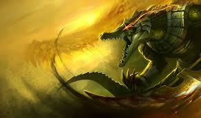

Diamond player!
League of Legends (LoL) is a multiplayer online battle arena video game developed and published by Riot Games for Microsoft Windows and macOS. Inspired by the Warcraft III: The Frozen Throne mod Defense of the Ancients, the game follows a freemium model and is supported by microtransactions.[1] In League of Legends, players assume the role of a "champion" with unique abilities and battle against a team of other player- or computer-controlled champions. The goal is usually to destroy the opposing team's "Nexus", a structure that lies at the heart of a base protected by defensive structures, although other distinct game modes exist as well with varying objectives, rules, and maps. Each League of Legends match is discrete, with all champions starting off relatively weak but increasing in strength by accumulating items and experience over the course of the game.[2] Champions span a variety of roles and blend a variety of fantasy tropes, such as sword and sorcery, steampunk, and Lovecraftian horror. Although the discrete nature of each match prohibits an overarching narrative in-game, the various champions make up a large and ever-evolving fictional universe developed by Riot Games.[3] Riot Games was founded by Brandon "Ryze" Beck and Marc "Tryndamere" Merill, former business students and roommates at the University of Southern California, in Los Angeles in September of 2006. Citing a dissatisfaction with their post-college careers and the business practices of contemporary video game developers, they decided to create their own company dedicated to making free-to-play games that constantly evolved and developed through player feedback. Beck and Merill recruited Defense of the Ancients veteran Steve "Guinsoo" Feak, as well as several other experienced developers, to help them build and refine the game that would later become League of Legends. Development, originally under the name Onslaught, was difficult, owing to technical limitations and Beck and Merill's conflicting visions with many publishers at the time.[4] They eventually partnered with Chinese conglomerate Tencent, which now fully owns the game and a majority share of the company's stock.[5] Three years after the company's founding, League of Legends was released with 40 champions on October 27, 2009. Development of the game continued during its early years based primarily on player feedback from online forums. An abridged version of the game called League of Legends: Wild Rift for mobile and console, was announced on October 15, 2019.[6] League of Legends was well received upon its release, and has since grown exponentially in popularity, with an active and expansive fanbase around the world. By July 2012, League of Legends was the most played PC game in North America and Europe in terms of the number of hours played.[7] League has among the largest footprints of any game in streaming media communities on platforms such as YouTube and Twitch; it routinely ranks first in the most-watched hours.[8][9] In September 2016, Riot Games estimated that there are over 100 million active players each month,[10][11] and in September of 2019, the company revealed that the game boasts nearly 8 million peak concurrent users each day.[12] The game's popularity has led it to expand into merchandise, with toys, accessories, and apparel, as well as tie-ins to other media through music videos, cinematics, web series, documentaries, and books. League of Legends has earned praise for its diverse artistic and musical departments, particularly for its character design and production value.[13][14] Various in-game champions comprise three distinct virtual music groups that have earned significant real-world attention: Pentakill, a heavy metal band, K/DA, a K-pop girl group, and True Damage, a hip hop group.[15] League of Legends has an active and widespread competitive scene, which is commonly described as the preeminent global eSport and a major factor towards the industry's legitimization. In North America and Europe, Riot Games organizes the League Championship Series (LCS), located in Los Angeles and the League of Legends European Championship (LEC), located in Berlin, respectively, each of which consist of 10 professional teams.[16][17] Similar regional competitions exist in China (LPL), South Korea (LCK), and various other regions. These regional competitions culminate with the annual World Championship. The 2019 League of Legends World Championship had over 100 million unique viewers, peaking at a concurrent viewership of 44 million, with a minimum prize pool of US$2.5 million that featured a collaboration between Riot Games and Louis Vuitton.[18] The 2018 Mid-Season Invitational had an overall peak concurrent viewership of 19.8 million, while the finals had an average concurrent viewership of 11 million.[19]. League of Legends is the world's most watched eSport, with total and peak viewerships that not only outdistance direct competitors such as Dota 2 and Fortnite, but other traditional sports events such as the Super Bowl.[20]